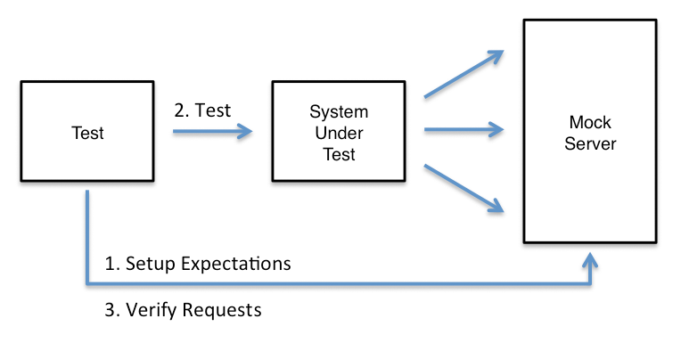

The typical sequence for using MockServer is as follows:
- Start MockServer
- Setup Expectations
- Run Test Scenario
- Verify Requests

0. Start MockServer
{% include_subpage _includes/running_mock_server_summary.html %}
1. Setup Expectations
{% include_subpage _includes/creating_expectations.html %}
3. Verify Requests
{% include_subpage _includes/verification_summary.html %}